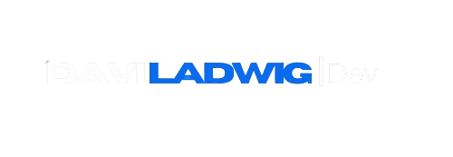
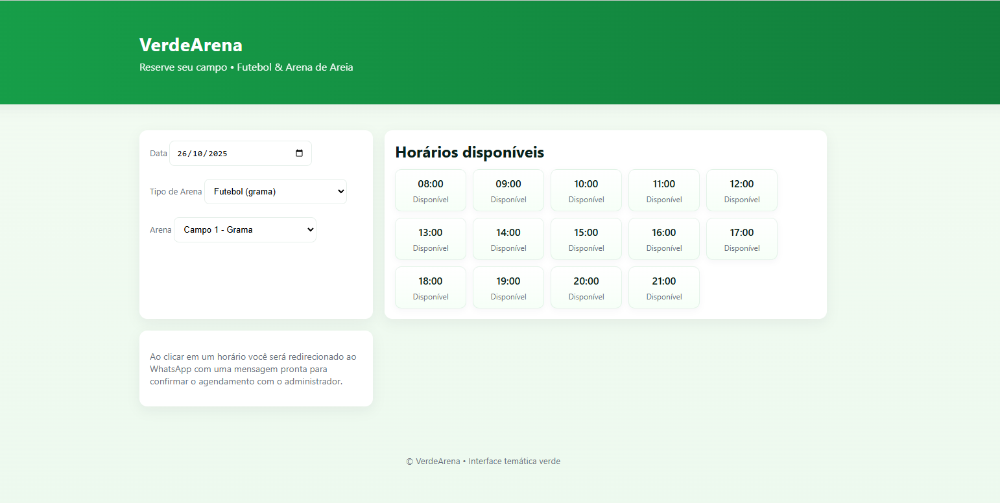
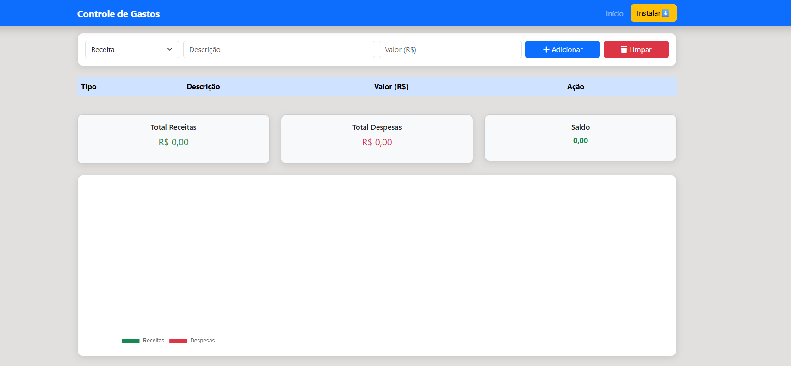
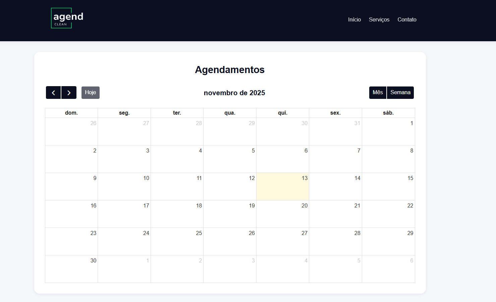
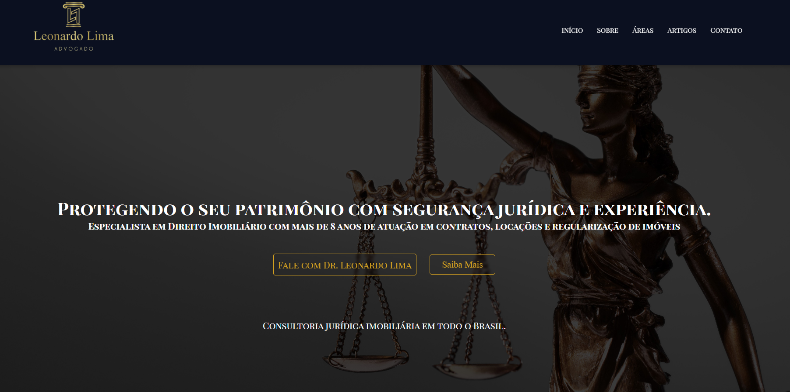
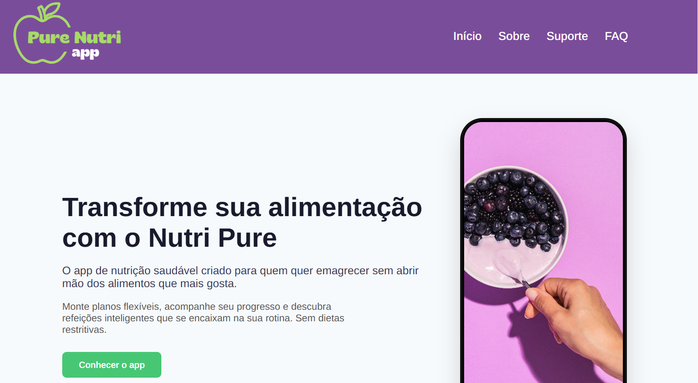
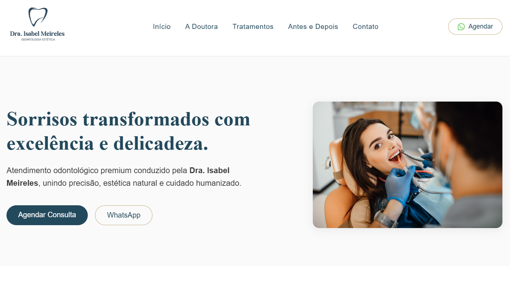

Verde Arena é um sistema de agendamentos de campos para praticar esportes.

Neste aplicativo o cliente poderá fazer contas e ter mais controle sobre seus gastos.

Sistema desenvolvido com intuito de automatizar agendamentos por meio de Inteligência Artificial.

Site desenvolvido para o advogado Leonardo Lima, que atua na área imobiliária.

App de bem estar e nutrição que gera automaticamente uma planilha de treinos e alimentação de acordo com o objetivo do usuário. .

Website institucional odontológico feito para a Dra. Isabel Meireles especialista em odontologia estética e reabilitação oral, unindo técnica avançada.